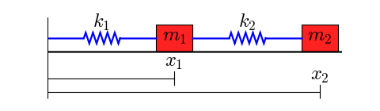
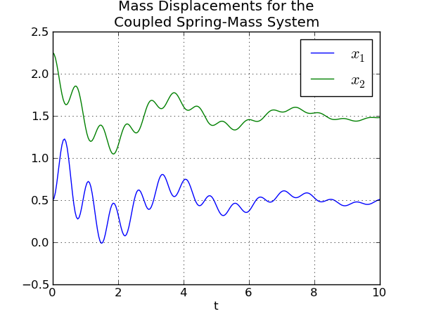

This cookbook example shows how to solve a system of differential equations. (Other examples include the [:LoktaVolterraTutorial:Lotka-Volterra Tutorial], the [:Cookbook/Zombie_Apocalypse_ODEINT:Zombie Apocalypse] and the [:Cookbook/KdV: KdV example].)
This figure shows the system to be modeled:
Two objects with masses m,,1,, and m,,2,, are coupled through springs with spring constants k,,1,, and k,,2,,. The left end of the left spring is fixed. We assume that the lengths of the springs, when subjected to no external forces, are L,,1,, and L,,2,,.
The masses are sliding on a surface that creates friction, so there are two friction coefficients, b,,1,, and b,,2,,.
The differential equations for this system are
m,,1,, x,,1,,’ ‘ + b,,1,, x,,1,,’ + k,,1,, (x,,1,, - L,,1,,) - k,,2,, (x,,2,, - x,,1,, - L,,2,,) = 0
m,,2,, x,,2,,’ ‘ + b,,2,, x,,2,,’ + k,,2,, (x,,2,, - x,,1,, - L,,2,,) = 0
This is a pair of coupled second order equations. To solve this system with one of the ODE solvers provided by SciPy, we must first convert this to a system of first order differential equations. We introduce two variables
y,,1,, = x,,1,,’, y,,2,, = x,,2,,’
These are the velocities of the masses.
With a little algebra, we can rewrite the two second order equations as the following system of four first order equations:
x,,1,,’ = y,,1,,
y,,1,,’ = (-b,,1,, y,,1,, - k,,1,, (x,,1,, - L,,1,,) + k,,2,, (x,,2,, - x,,1,, - L,,2,,))/m,,1,,
x,,2,,’ = y,,2,,
y,,2,,’ = (-b,,2,, y,,2,, - k,,2,, (x,,2,, - x,,1,, - L,,2,,))/m,,2,,
These equations are now in a form that we can implement in Python.
The following code defines the “right hand side” of the system of equations (also known as a vector field). I have chosen to put the function that defines the vector field in its own module (i.e. in its own file), but this is not necessary. Note that the arguments of the function are configured to be used with the function: the time t is the second argument.
#!python
#
# two_springs.py
#
"""
This module defines the vector field for a spring-mass system
consisting of two masses and two springs.
"""
def vectorfield(w, t, p):
"""
Defines the differential equations for the coupled spring-mass system.
Arguments:
w : vector of the state variables:
w = [x1,y1,x2,y2]
t : time
p : vector of the parameters:
p = [m1,m2,k1,k2,L1,L2,b1,b2]
"""
x1, y1, x2, y2 = w
m1, m2, k1, k2, L1, L2, b1, b2 = p
# Create f = (x1',y1',x2',y2'):
f = [y1,
(-b1 * y1 - k1 * (x1 - L1) + k2 * (x2 - x1 - L2)) / m1,
y2,
(-b2 * y2 - k2 * (x2 - x1 - L2)) / m2]
return f
Next, here is a script that uses to solve the equations for a given set of parameter values, initial conditions, and time interval. The script prints the points in the solution to the terminal. Normally you will redirect its output to a file.
#!python
#
# two_springs_solver.py
#
"""Use ODEINT to solve the differential equations defined by the vector field
in two_springs.py.
"""
from scipy.integrate import odeint
import two_springs
# Parameter values
# Masses:
m1 = 1.0
m2 = 1.5
# Spring constants
k1 = 8.0
k2 = 40.0
# Natural lengths
L1 = 0.5
L2 = 1.0
# Friction coefficients
b1 = 0.8
b2 = 0.5
# Initial conditions
# x1 and x2 are the initial displacements; y1 and y2 are the initial velocities
x1 = 0.5
y1 = 0.0
x2 = 2.25
y2 = 0.0
# ODE solver parameters
abserr = 1.0e-8
relerr = 1.0e-6
stoptime = 10.0
numpoints = 250
# Create the time samples for the output of the ODE solver.
# I use a large number of points, only because I want to make
# a plot of the solution that looks nice.
t = [stoptime * float(i) / (numpoints - 1) for i in range(numpoints)]
# Pack up the parameters and initial conditions:
p = [m1, m2, k1, k2, L1, L2, b1, b2]
w0 = [x1, y1, x2, y2]
# Call the ODE solver.
wsol = odeint(two_springs.vectorfield, w0, t, args=(p,),
atol=abserr, rtol=relerr)
# Print the solution.
for t1, w1 in zip(t, wsol):
print t1, w1[0], w1[1], w1[2], w1[3]
The following script uses Matplotlib to plot the solution generated by
#!python
#
# two_springs_plot.py
#
"""Plot the solution that was generated by two_springs_solver.py."""
from numpy import loadtxt
from pylab import figure, plot, xlabel, grid, hold, legend, title, savefig
from matplotlib.font_manager import FontProperties
t, x1, xy, x2, y2 = loadtxt('two_springs.dat', unpack=True)
figure(1, figsize=(6, 4.5))
xlabel('t')
grid(True)
hold(True)
lw = 1
plot(t, x1, 'b', linewidth=lw)
plot(t, x2, 'g', linewidth=lw)
legend((r'$x_1$', r'$x_2$'), prop=FontProperties(size=16))
title('Mass Displacements for the\nCoupled Spring-Mass System')
savefig('two_springs.png', dpi=100)
The commands
python two_springs_solver.py > two_springs.dat
python two_springs_plot.py
generate the following plot of the solution:
